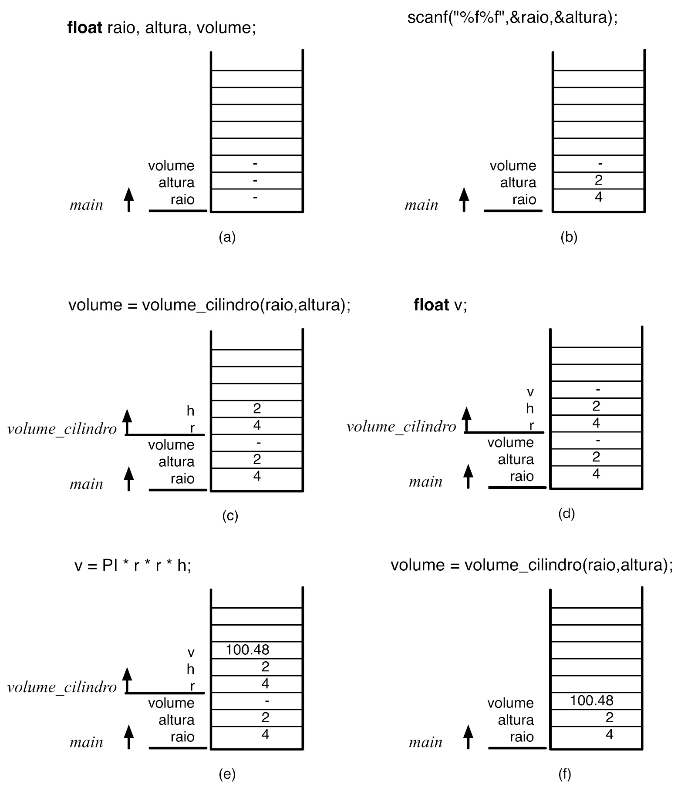
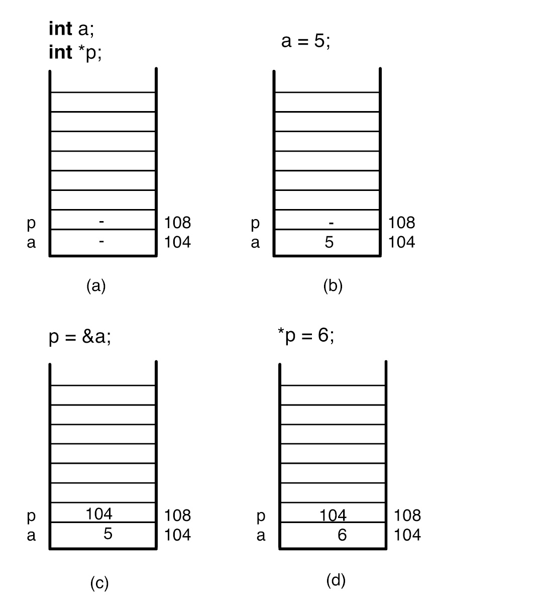
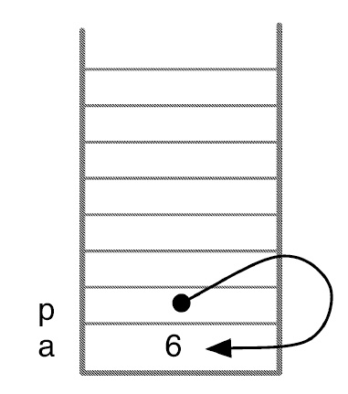
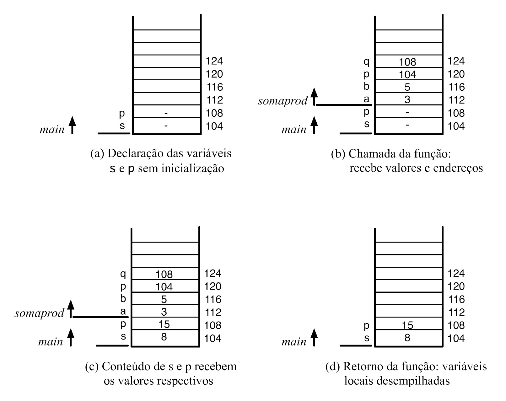
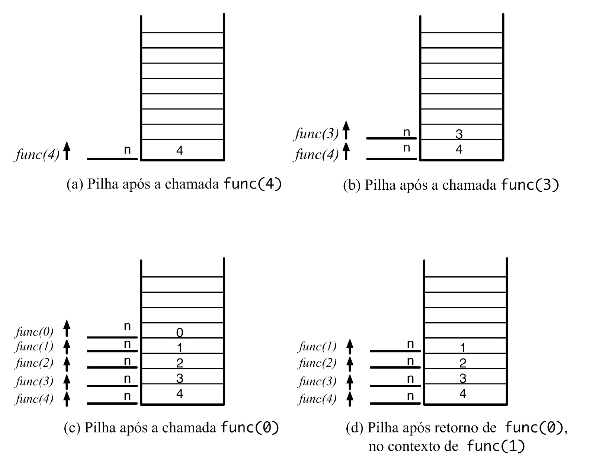

Como dividir um programa em blocos reutilizáveis — e como uma função pode alterar diretamente as variáveis de quem a chamou.
Cada função implementa uma funcionalidade específica — e o programa principal só a chama.
codificar várias funções pequenas é mais simples que uma função gigante
uma função correta serve em qualquer outro programa que precise dela
trecho que se repete vira função, chamada quantas vezes for preciso
quem chama só quer o resultado, não como ele foi calculado
tipo_do_retorno nome(lista_de_parâmetros) { corpo }
tipo do valor devolvido
nome — único no programa
parâmetros, com tipo e nome
corpo, entre chaves
// Function to calculate volume of a cylinder
double cylinder_volume(double radius,
double height)
{
return M_PI * pow(radius, 2) * height;
}A execução começa sempre em main, qualquer que seja a ordem das funções no arquivo.
Ou ela vem escrita antes de quem a chama, ou seu protótipo é declarado no topo do arquivo.
A função inteira aparece acima de main — é o que os exemplos deste módulo fazem.
Só o cabeçalho, com ponto-e-vírgula: o compilador já sabe os tipos e a definição pode vir depois.
double cylinder_volume(double, double); int main() { ... }A execução de um programa em C começa pela primeira função escrita no arquivo.
A execução começa sempre pela função main, não importa a ordem em que as funções aparecem no código. A ordem só importa para o compilador saber o cabeçalho de quem é chamado — e o protótipo resolve isso.
Zero ou mais parâmetros entram por cópia; o return devolve um único valor a quem chamou.
O primeiro valor da chamada vira o primeiro parâmetro; o segundo, o segundo — e os tipos têm de corresponder.
A função não devolve valor nenhum pelo return.
A função não recebe parâmetro nenhum — como count_calls(), do exemplo de variáveis estáticas.
Por isso ela pode aparecer dentro de uma expressão maior, como cylinder_volume(radius, height) / 2.0.
double volume = cylinder_volume(radius, height);
printf("Volume: %.2lf\n", volume);Radius: 4.00
Height: 2.00
Volume: 100.53Uma função pode devolver, num único return, dois valores de uma vez.
O return devolve um valor, do tipo declarado antes do nome da função. Para entregar mais de um resultado a quem chamou, é preciso outro mecanismo — e é aí que entram os ponteiros.
Nomes iguais em funções diferentes são variáveis distintas, em áreas de memória distintas.
Declara radius, height e volume — e não alcança nada de dentro da função auxiliar.
Seus parâmetros radius e height são outras variáveis, inicializadas com cópias dos valores passados.
Variáveis locais e parâmetros são alocados no topo da pilha de execução e liberados quando o tempo de vida termina.
Parâmetros e variáveis locais vivem numa região de memória que desaparece quando a função retorna.

Uma variável local continua existindo na memória depois que a função que a declarou retorna.
Variáveis locais são automáticas: o espaço é reservado no topo da pilha quando a declaração é executada e liberado assim que a função retorna. A cada nova chamada, o espaço é reservado de novo — e o valor anterior não volta.
Alterar os parâmetros não resolve: eles são cópias, e quem chamou não vê a mudança.
A soma de dois números sai pelo return, sem dificuldade nenhuma.
Soma e diferença: escrever nos parâmetros não funciona — quem chamou continua com lixo.
sum = a + b; difference = a - b;& obtém o endereço de uma variável; * acessa — ou altera — o valor guardado nele.

Para cada tipo existe um tipo ponteiro: int *, double *, char *...
"endereço de" — resulta no endereço da variável
"conteúdo de" — acessa o valor guardado naquele endereço
int num = 42;
int *ptr;
ptr = # // ptr guarda o endereço de num
printf("Value pointed to by ptr: %d\n", *ptr);
*ptr = 100; // altera num pelo ponteiroOriginal num value: 42
Value pointed to by ptr: 42
Updated num value: 100
(as linhas de endereço mudam a cada execução)Em vez de escrever o endereço fictício, desenha-se uma seta: acessar a é o mesmo que acessar *p.

O ponteiro é uma variável como outra qualquer: sem atribuição, seu conteúdo é indefinido.
Escrever pelo ponteiro antes de apontá-lo para algum espaço válido grava num endereço desconhecido — e o programa pode "voar".
int *p; *p = 3;Primeiro o ponteiro passa a apontar para um espaço que já existe; só então se escreve no conteúdo.
int a; int *p; p = &a; *p = 3;Depois de p = &a;, o comando *p = 6; altera o valor da variável a.
Como p guarda o endereço de a, escrever em *p é escrever no espaço de memória de a — acessar a e acessar *p passam a ser a mesma coisa.
Uma função só altera o que recebeu por endereço — nunca uma cópia.
Recebe uma cópia de num — alterar essa cópia não muda o original.
Recebe o endereço de num — escreve através de *ptr na variável original.
Recebendo os endereços das variáveis de main, a função escreve os dois resultados diretamente nelas.

A função é void: os resultados saem pelos endereços que ela recebeu.
void calculate_sum_and_difference(
double a, double b, double *sum, double *difference)
{
*sum = a + b;
*difference = a - b;
}calculate_sum_and_difference(num1, num2, &sum, &difference);Sum: 10.00
Difference: 5.00O scanf precisa gravar na sua variável — e só consegue isso recebendo o endereço dela.
printf("Enter the radius of the cylinder: ");
scanf("%lf", &radius);Se o parâmetro fosse declarado double sum (sem o *), a função ainda conseguiria devolver a soma gravando em sum.
Sem o *, sum seria uma variável local da função, inicializada com uma cópia — e desempilhada no retorno. A variável de main continuaria com lixo. É o ponteiro que dá acesso ao espaço de memória original.
Nasce e morre a cada chamada da função — vive na pilha e some quando ela retorna.
vida: 1 chamadaFora da pilha, inicializada uma única vez; preserva o valor entre chamadas, mas continua visível só ali.
vida: todo o programaDeclarada fora de qualquer função: existe do início ao fim do programa, visível a todas as funções seguintes.
vida: todo o programaSem inicialização explícita, uma variável estática começa em zero — e o valor sobrevive ao retorno da função.
int count_calls()
{
static int counter = 0; // Local static variable
counter++; // Increment the counter
return counter;
}Function has been called 1 times.
Function has been called 2 times.
Function has been called 3 times.
Function has been called 4 times.
Function has been called 5 times.Duas funções podem se comunicar por uma variável global, mas o preço é alto.
Visível — e alterável — por qualquer função seguinte, e por qualquer arquivo do programa. Alto grau de interdependência entre as funções.
int s, p;Visível apenas dentro do arquivo que a declara: o nome não é exportado. Ameniza o problema, mas ainda pede critério.
static int s, p;Uma variável static declarada dentro de uma função pode ser lida por outra função do mesmo arquivo.
O static local muda o tempo de vida (passa a durar todo o programa), não o escopo: a variável continua visível só dentro da função que a declara. Quem quer visibilidade geral usa variável global — com critério.
Direta, quando A chama A; indireta, quando A chama B e B chama A de volta.
As variáveis locais de cada chamada são independentes — como se fossem funções diferentes.

A chamada recursiva precisa caminhar para um caso em que ela não acontece mais.
A função chama a si mesma com o mesmo valor: o programa nunca termina e é interrompido quando a pilha chega ao limite.
func(n); // sempreO argumento diminui a cada chamada e existe um valor em que a recursão para — a execução tem fim.
if (n <= 1) return 1;n! = n × (n−1)!, com caso-base 0! = 1! = 1 — a mesma ideia já vista de forma iterativa no módulo de repetições.
long long factorial(int n)
{
if (n <= 1)
{
return 1;
}
return n * factorial(n - 1);
}Digite um numero: 5! = 120Numa função recursiva, todas as chamadas compartilham a mesma variável n.
Cada chamada — recursiva ou não — empilha a sua própria moldura, com parâmetros e variáveis locais independentes. É por isso que factorial(5) pode estar esperando o resultado de factorial(4) sem que um valor atropele o outro.
#define não é uma função — não existe chamada, parâmetro ou retorno de verdade.
o pré-processador substitui a linha pelo corpo do arquivo — entre < > não procura no diretório local; entre " ", procura
definição com parâmetros — uma macro: toda ocorrência de SQUARE(...) é trocada pelo texto correspondente
Não há chamada de função em tempo de execução: o compilador só vê ((num) * (num)).
// Define a macro to calculate the square of a number
#define SQUARE(x) ((x) * (x))
int num = 5;
int squared = SQUARE(num);The square of 5 is 25Substituição é texto puro: sem parênteses, a precedência dos operadores muda o resultado.
Com SQUARE(2 + 3), o compilador vê o texto trocado cru:
Com os parênteses, a expressão passada é avaliada antes da multiplicação:
((2 + 3) * (2 + 3)) resultado 25Como SQUARE(num) se parece com uma chamada de função, existe uma chamada de função quando o programa roda.
A macro é resolvida pelo pré-processador, antes da compilação: o texto é substituído no código-fonte e o compilador nunca vê SQUARE. Não há empilhamento de moldura, nem parâmetro, nem retorno.
Código-fonte, explicação linha a linha e simulação da execução passo a passo — sem precisar compilar nada. Depois, teste o que aprendeu no quiz.